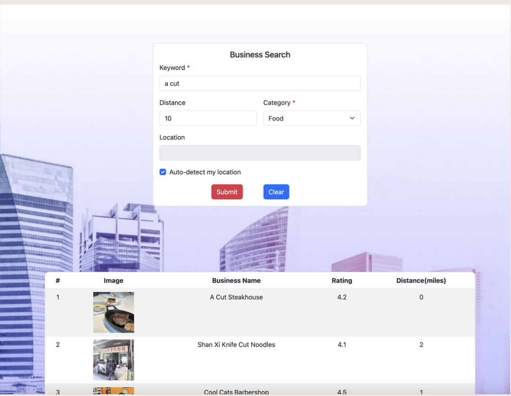
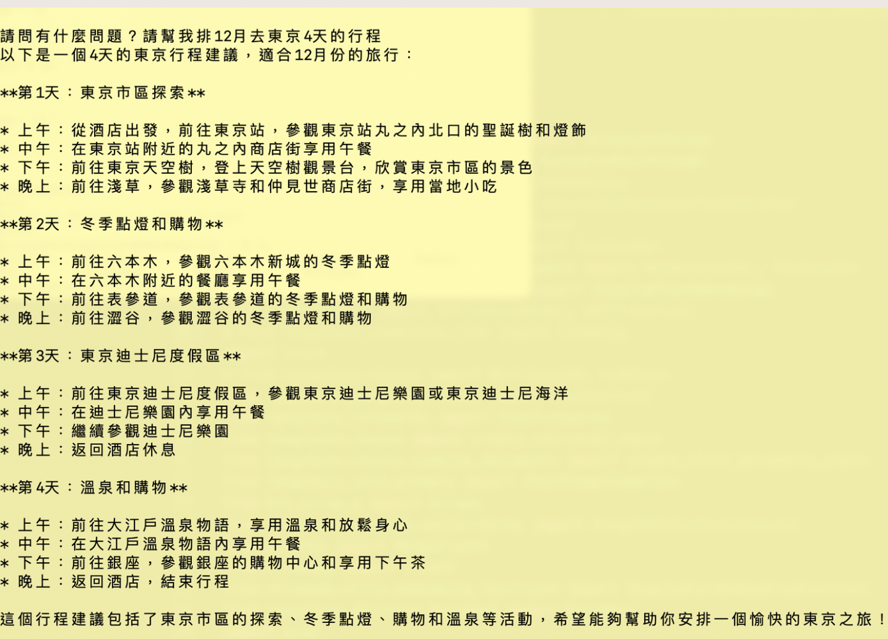
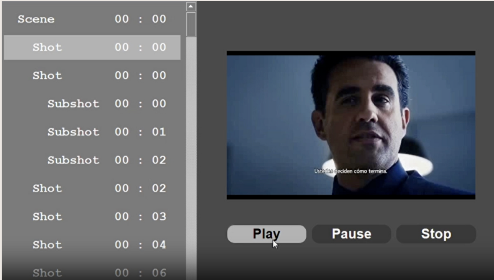
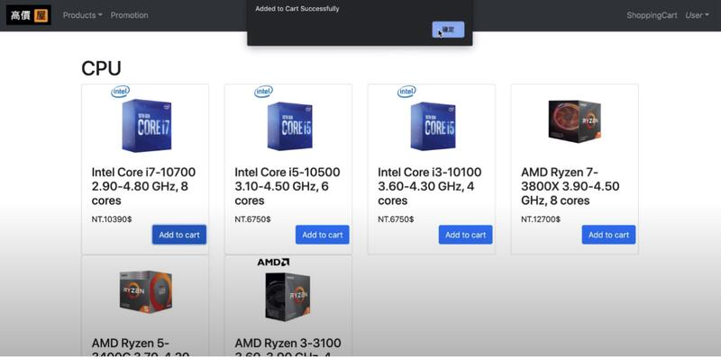

Ssu Hsien Chung
Software Engineer
- Email: chungssuhsien@gmail.com
- Location: Taipei, Taiwan
- Resume: Download
What I'm Interested In
Frontend Development
Building responsive user friendly interfaces using HTML, CSS, JavaScript, and modern frameworks like React or Vue.
Backend Development
Creating endpoints in the backend and test-driven development using end-to-end and unit tests.
Artificial Intelligence
Exploring AI through projects like Retrieval-Augmented Generation (RAG), leveraging web scraping, LangChain, and LLMs to build intelligent tools. I enjoy applying AI to solve real-world problems and enhance user experiences.
Algorithms and Problem Solving
I have a passion for tackling algorithmic challenges and improving my problem-solving skills. I enjoy exploring efficient solutions to complex computational problems and continuously enhancing my understanding of data structures and algorithms.
About Me
Hi, I'm Ssu-Hsien Chung! I’m a front-end engineer at PChome with a Master’s degree in Computer Science from the University of Southern California (USC). My expertise lies in building high-performance web applications with React and Next.js.
At PChome, I optimize e-commerce websites, enhance SEO visibility, and implement user tracking with Google Analytics 4 and server-side tracking techniques, achieving significant performance improvements.
Previously, I interned at PChome and Sunbird Software, where I gained hands-on experience in front-end development, backend refactoring using aspect-oriented programming (AOP), and performance optimization. Notably, I improved a PChome project’s performance by 35%, reducing load times significantly.
With a strong foundation in software engineering and a passion for creating scalable solutions, I’m excited about opportunities to collaborate and contribute to impactful projects. Feel free to reach out to discuss potential opportunities or my experience!
Work Experience
PChome Online Inc.
Role: Front-End Engineer
Duration: Full-Time | June 2024 - Present
Developing high-performance e-commerce websites using React and Next.js. Collaborated with SEO and marketing teams, implemented Google Analytics 4, and optimized performance with SSR and lazy loading.
Role: Software Engineer Intern
Duration: Internship | Summer 2023
Rebuilt an outdated project using Next.js, improving website performance by 35%. Reduced FCP by 0.5s, LCP by 6.4s, and total blocking time by 640ms.
Sunbird Software
Role: Software Engineer Intern
Duration: Internship | Summer 2021
Refactored backend programs using aspect-oriented programming (AOP), reducing code duplication and enhancing readability. Wrote comprehensive test cases to validate implementation and ensured code quality and maintainability.
Projects
Yelp Business Search
Technologies: Angular, Bootstrap, Android Studio, Node.js, Express, Google Cloud Platform
Built a responsive web application to search Yelp business results based on user inputs and locations. Implemented geocoding, autocomplete, IP address lookup, and embedded maps for a better user experience.
Retrieval-Augmented Generation (RAG)
Technologies: Python, LangChain, MongoDB, bs4
Built an AI assistant that uses real-time scraped data for Retrieval-Augmented Generation (RAG). Integrated web scraping with `bs4`, LangChain, and MongoDB to enhance response accuracy by using up-to-date information.
Video Player with Scene Detection
Technologies: Python, OpenCV, PyQt
Developed a video player that detects scene changes and allows navigation between scenes. Implemented functionalities like Play, Pause, Stop, and random access using OpenCV and PyQt.
High Price 3C Store
Technologies: React, Python (Django REST), MySQL
Designed and implemented an e-commerce platform for high-value computer components. Developed features like user management, shopping cart, checkout, and inventory management. Built a database schema optimized for performance and normalization. Integrated a Vue.js-based frontend with Django REST APIs and ensured seamless user interaction through a well-structured database and backend logic.
Little-Go AI Agent
Technologies: Python, Reinforcement Learning
Developed AI agents for a 5x5 Little-Go game using search, game playing, and reinforcement learning techniques. Ranked #2 out of 207 students in the class leaderboard.
Student Performance Analysis System
Technologies: C++, Linux System Calls, TCP/UDP Sockets
Designed a client-server application to analyze departmental data and GPAs. Supported up to 10 simultaneous clients using multithreading with Linux system calls and reduced database lookup latency with efficient data structures.